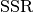
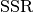

bayesian_info_criterion_lsq¶
-
astropy.stats.bayesian_info_criterion_lsq(ssr, n_params, n_samples) [edit on github][source]¶ Computes the Bayesian Information Criterion (BIC) assuming that the observations come from a Gaussian distribution.
In this case, BIC is given as

in which
 is the sample size,
is the sample size,  is the number of free
parameters and  stands for the sum of squared redisuals
between model and data.
is the number of free
parameters and  stands for the sum of squared redisuals
between model and data.This is applicable, for instance, when the parameters of a model are estimated using the least squares statistic. See [R27] and [R28].
Parameters: ssr : float
Sum of squared residuals (SSR) between model and data.
n_params : int
Number of free parameters of the model, i.e., dimension of the parameter space.
n_samples : int
Number of observations.
Returns: bic : float
References
[R27] (1, 2) Wikipedia. Bayesian Information Criterion. <https://en.wikipedia.org/wiki/Bayesian_information_criterion> [R28] (1, 2) Origin Lab. Comparing Two Fitting Functions. <http://www.originlab.com/doc/Origin-Help/PostFit-CompareFitFunc> [R29] (1, 2) Astropy Models and Fitting <http://docs.astropy.org/en/stable/modeling> Examples
Consider the simple 1-D fitting example presented in the Astropy modeling webpage [R29]. There, two models (Box and Gaussian) were fitted to a source flux using the least squares statistic. However, the fittings themselves do not tell much about which model better represents this hypotetical source. Therefore, we are going to apply to BIC in order to decide in favor of a model.
>>> import numpy as np >>> from astropy.modeling import models, fitting >>> from astropy.stats.info_theory import bayesian_info_criterion_lsq >>> # Generate fake data >>> np.random.seed(0) >>> x = np.linspace(-5., 5., 200) >>> y = 3 * np.exp(-0.5 * (x - 1.3)**2 / 0.8**2) >>> y += np.random.normal(0., 0.2, x.shape) >>> # Fit the data using a Box model >>> t_init = models.Trapezoid1D(amplitude=1., x_0=0., width=1., slope=0.5) >>> fit_t = fitting.LevMarLSQFitter() >>> t = fit_t(t_init, x, y) >>> # Fit the data using a Gaussian >>> g_init = models.Gaussian1D(amplitude=1., mean=0, stddev=1.) >>> fit_g = fitting.LevMarLSQFitter() >>> g = fit_g(g_init, x, y) >>> # Compute the mean squared errors >>> ssr_t = np.sum((t(x) - y)*(t(x) - y)) >>> ssr_g = np.sum((g(x) - y)*(g(x) - y)) >>> # Compute the bics >>> bic_t = bayesian_info_criterion_lsq(ssr_t, 4, x.shape[0]) >>> bic_g = bayesian_info_criterion_lsq(ssr_g, 3, x.shape[0]) >>> bic_t - bic_g 30.644474706065466
Hence, there is a very strong evidence that the Gaussian model has a significantly better representation of the data than the Box model. This is, obviously, expected since the true model is Gaussian.